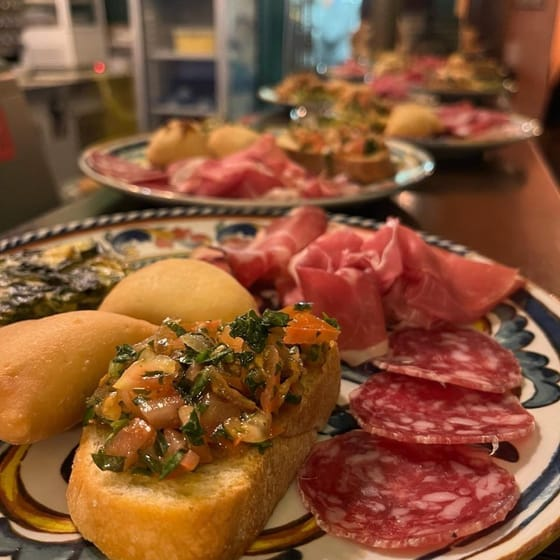
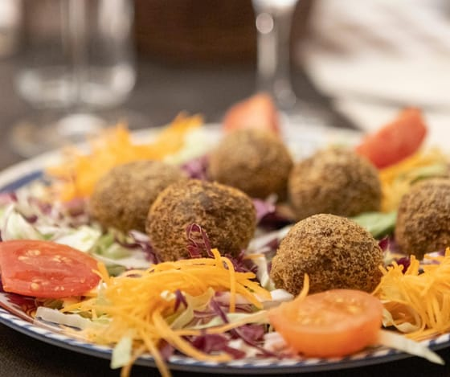
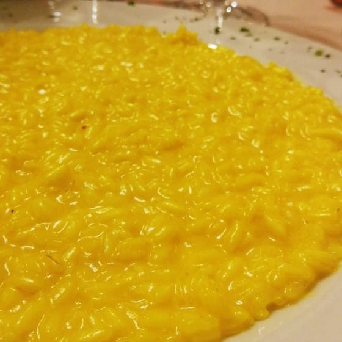
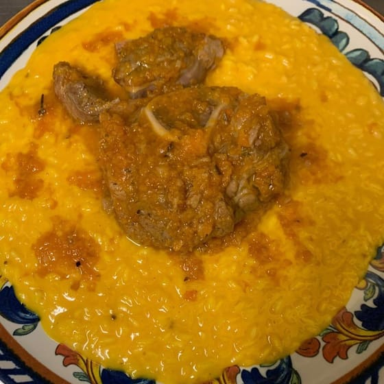
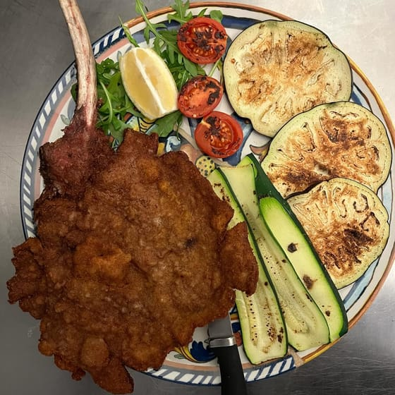
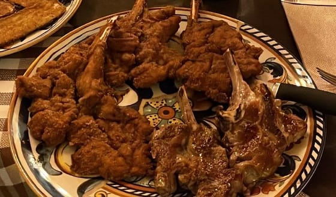
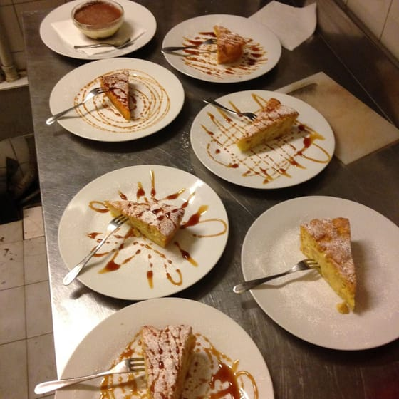

Trattoria milanese · Via San Tomaso 5, Cordusio
Un ristorante con antiche tradizioni.
Trattoria nel cuore di Milano a due passi dal Castello Sforzesco e da Piazza Cordusio.
«Ottima esperienza nel centro che più centro di Milano non si può.»
4,4 su Google, 985 recensioni
Pranzo e cena, dal lunedì al sabato
Le candele sulla cera colata sono le loro: sui tavoli della sala, una sera dopo l'altra.
Ogni giorno
Proposte del giorno
Oltre alla carta, ogni giorno qualche piatto in più. Le proposte del giorno le scriviamo sulla nostra pagina Facebook.
Mercoledì 30 settembre
Proposte del giorno
- Risotto ai funghi porcini
- Casoncelli al ragù
- Zuppa di fagioli cannellini con pasta
- Tacchino tonnato con fagiolini al vapore
- Insalatona d'orzo con pollo e verdura
un giorno, per esempio
La carta
Sulle mensole, i piatti di sempre
Il risotto giallo, l'ossobuco, la cotoletta: la cucina milanese, come le bottiglie vecchie sulle mensole della sala. Qui una parte della carta.
Antipasti
- Frittata di cipolla con insalata
- Insalata di mare

Degustazione di salumi con miele e formaggio
Mondeghili, le polpette milanesi
Risotti e primi

Risotto alla milanese
Risotto alla milanese con l'ossobuco- Risotto ai funghi porcini
- Casoncelli al ragù
Secondi

Cotoletta alla milanese, con l'osso- Cotoletta «orecchio d'elefante»
- Tagliata di pollo, radicchio e scamorza e aceto balsamico

Costolette d'agnello fritte, quando ci sono
Dolci
- Tiramisù
- Torta di mele
- Torta di pere con cacao

I dolci, pronti
Dalla carta di TheFork e dai nostri piatti su Instagram e Facebook. La carta completa ve la portiamo a tavola.
La sala
Dalla finestra a piombo
La sala gialla coi vetri a piombo, i lampadari di ferro coi rami e le lucine, le mensole di bottiglie vecchie e, la sera, le candele sui tavoli.
Le foto sono nostre, da Facebook e Instagram; due sono di clienti su Google: il tavolo col candeliere (Marcella Amoroso) e la torta (Riccardo Torriero). Toccate un vetro per vedere la foto intera.
Dicono
Calda e accogliente, a due passi dal Duomo
4,4 su Google, 985 recensioni
«Conosco questo posto da 25 anni, ci venivo a pausa pranzo molti anni fa e avevo un ottimo ricordo, ci son tornata oggi e pensavo non ci fosse più, come tanti bei posti ormai scomparsi a Milano. Invece c’è ancora! Ho mangiato uno spezzatino con funghi porcini (freschi) e patate, un ottimo tiramisù, mio marito un ottima torta cioccolato e pere. […] Super consigliato!»
Marcella Amoroso Google, 7 mesi fa
«Ho cenato in questo posto sabato sera con la mia famiglia ed è diventato uno dei miei posti preferiti! L' atmosfera è calda e accogliente, il cibo è ottimo ed il servizio eccellente. […] Lo consiglio vivamente!»
SARA DELFI Google, 4 mesi fa
«Ottima scelta
Trovato quasi per caso di fronte l’albergo in cui ho pernottato
Servizio semplice ma efficace
Piatti abbondanti, saporiti e ben curati
Ottimo il risotto al gorgonzola e radicchio»Riccardo Torriero Google, 10 mesi fa
«Locale estremamente accogliente a due passi dal Duomo: l’ambiente è semplice ma davvero particolare, con vecchi tavoli di legno. […] Ho apprezzato molto la disponibilità a offrire un’alternativa vegana non scontata: mi hanno preparato un risotto con funghi davvero eccellente. […] Offre un menu giornaliero oltre ad alcune proposte fisse. Raccomandato per la posizione, la qualità e l’ambiente!»
rebecca garavaglia Google, 2 anni fa
«Piacevole scoperta! […] Cucina locale, ottimo il risotto e la carne. […] Tappa consigliata se siete in centro.»
Marco Google, 8 mesi fa
«Ideale per la pausa pranzo. Ogni giorno piatti espressi, sempre con una zuppa adatta ai vegetariani. Ottimi i risotti. Ambiente informale, l'ideale è pranza prima delle 13 o dopo le 14. […]»
Stefano Sonzogni Google, 2 anni fa
Dalle recensioni su Google, come sono state scritte. Anche la frase in alto viene da una recensione su Google. Tutte le recensioni su Google
Orari
A mezzogiorno e la sera
Pranzo e cena dal lunedì al venerdì, il sabato solo la cena.
Orari dalla nostra scheda Google (settembre 2026).
Dove
Fra il Castello e Cordusio
Via San Tomaso è una via corta fra Via Broletto e Via Rovello, e prende il nome dalla chiesa di San Tomaso in Terramara, in Via Broletto, a pochi passi. La porta è quella coi rampicanti e le lucine, sotto il cartello tondo giallo.
La mappa è di Google: aprendola, Google riceve il tuo indirizzo IP e può usare i suoi cookie.
- Dove
- Via San Tomaso 5, 20121 Milano
- In metro
- M1 Cordusio, a circa 220 metri; M1 Cairoli, a circa 260; M1 e M3 Duomo, a circa 450
- In tram
- 1 e 12 a Cordusio; 1, 12 e 14 in Via Cusani; 1, 2 e 4 a Cairoli
- In autobus
- 57 a Cairoli, 96 in Via Cusani
- Telefono
- 02 874510
Per un tavolo, o per chiedere qualcosa: chiamateci o scriveteci.